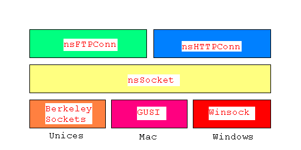

libxpnet: Architecture and API Overview
Original author: Samir Gehani <sgehani@netscape.com>In this docoument
I. Motivation
The Mozilla and Netscape 6 installers were designed such that users download a lighweight "stub" installer under 200 KB, choose which software packages to install, the destination directory for the installation and so forth. Thereafter, only the selected packages are downloaded and installed saving low bandwidth users considerable time. The stub installers are all written in platform-native code. Being cross-platform, we have three separate codebases: one installer codebase for windows, one for the macintosh, and one for the unices. The windows and mac installers used a third-party library, SmartDownload, to fetch installer modules via HTTP and FTP. The linux installer used the original incarnation of libxpnet, a clean-room implementation of an FTP client.
Since the original release of Netscape 6, the third-party vendor that originally authored the SmartDownload library on windows and mac stopped supporting it. There were significant defects that warranted the need for a maintainable download library. There were two choices:
- get the source code for the SmartDownload libraries on mac and windows and then expand the original linux FTP implementation to be at par with the SmartDownload libraries
- expand the original linux FTP implementation to be at par with the SmartDownload feature set and make the library cross-platform
We decided to opt for the latter choice for the following reasons:
- it allowed us to have an easily maintainable codebase we were already familiar with (SmartDownload source was to be provided with minimal to no documentation which was not deemed acceptable by engineering).
- we could implement our own integrated user-interface (the SmartDownload library forced the use of their own user-interface which didn't comply with interface guidelines)
- we could tune the network library at will to work with our server farm from a functional stand point and from an efficiency standpoint
- mozilla could now take advantage of the download functionality and architecture of the stub installers: previously the SmartDownload libraries being binary were not acceptable for use by mozilla.org since source is required for code used in any mozilla project (mostly)
II. Feature Set
Having described the motivation, following is an enumeration of features we have implemented in libxpnet for SmartDownload parity:
- Minimal HTTP/1.1 support per RFC 2068 to get files
- Minimal FTP support per RFC 959 to get files
- Proxy support using HTTP proxies
- Pause/resume support
- Cancel support
The general requirement is to be able to download a file via HTTP or FTP, regardless of whether a client is behind a proxy server, and to be able to resume the download mid-file regardless of whether a connection dropped or the user explicitly paused or canceled the download. Hence, we have a mechanism to explicitly pause/cancel a download and to be able to distinguish such an explicit pause/cancel from a dropped connection.
III. Example and Building the Library
See TestLibxpnet for a sample usage of these APIs. The library can easily be built on any platform by building the three objects first: nsSocket.o, nsFTPConn.o, nsHTTPConn.o and linking them into a static library. Note that all three classes, i.e., nsSocket, nsFTPConn, nsHTTPConn, have self-tests built into them if the appropriate macros are defined at compile time: TEST_NSSOCKET for nsSocket, TEST_NSHTTPCONN for nsHTTPConn, and TEST_NSFTPCONN for nsFTPConn. Each class can be compiled into a standalone program when these test macros are turned on. Alternatively, if you have built mozilla, you will find the resultant static library in dist or under the libxpnet/src directory.
IV. Architecture
The two protocols supported in libxpnet, HTTP and FTP, are abstracted above a cross-platform socket layer that deals with the networking directly. The socket layer talks to the platform-specific networking libraries available: kernel-based berkeley sockets on the Unices, Winsock on Windows, and GUSI on the Mac.

V. API Overview
-
nsHTTPConn
Constructors
nsHTTPConn(char *aHost, int aPort, char *aPath);
Prepare to create an HTTP connection to the supplied host at a possibly non-default port and download the resultant response into the file whose path is specified.
aHost:a DNS-resolvable hostname or an IP address string (only IPv4 currently supported)
aPort:a possibly non-default integer port number less than 65536
aPath:a path to the destination file on the local system that will be created with the HTTP response contentsnsHTTPConn(char *aURL);
Prepare to create an HTTP connection to get the file at the supplied URL. The destination file on the local system will be named after the leaf name of the HTTP URL supplied. If no leaf name is detected then the default file name will be "index.html". Note that the downloaded file will be created in the current working directory.
aURL:an HTTP URL per the semantics specified by RFC 1738nsHTTPConn(char *aHost, int aPort, char *aPath, int (*aEventPumpCB)(void));
Prepare to create an HTTP connection to the supplied host at a possibly non-default port and download the resultant response into the file whose path is specified. An event pump callback can be supplied to receive notification during the connection phase.
aHost:a DNS-resolvable hostname or an IP address string (only IPv4 currently supported)
aPort:a possibly non-default integer port number less than 65536
aPath:a path to the source file on the HTTP server (http://<aHost>:<aPort>/<aPath>)
aEventPumpCB:a callback function to be implemented by the client which will be called during the connection phase (optional and can be NULL)nsHTTPConn(char *aURL, int (*aEventPumpCB)(void));
Prepare to create an HTTP connection to get the file at the supplied URL. The destination file on the local system will be named after the leaf name of the HTTP URL supplied. If no leaf name is detected then the default file name will be "index.html". Note that the downloaded file will be created in the current working directory. An event pump callback can be supplied to receive notification during the connection phase.
aURL:an HTTP URL per the semantics specified by RFC 1738
aEventPumpCB:a callback function to be implemented by the client which will be called during the connection phase (optional and can be NULL)
Methods
int Open();
Opens a new HTTP connection using the host and port specification passed in the constructor.int ResumeOrGet(HTTPGetCB aCallback, char *aDestFile);
Resumes a mid-file download if an old destination file is found or starts the download afresh if no destination file is found on the local file system. Uses the URL or server path passed in the constructor. Automatically starts from the end of the incompletely downloaded file.
aCallback:the optional download progress callback to be implemented by the client (can be NULL) that is updated once every 1KB (can be tuned in the libxpnet source)
aDestFile:the path to the destination file to be downloadedint Get(HTTPGetCB aCallback, char *aDestFile);
Performs an HTTP GET of the URL or server path passed in the constructor.
aCallback:the optional download progress callback to be implemented by the client (can be NULL) that is updated once every 1KB (can be tuned in the libxpnet source)
aDestFile:the path to the destination file to be downloadedint Get(HTTPGetCB aCallback, char *aDestFile, int aResumePos);
Resumes a mid-file download from the resume position of the file being downloaded. Uses the URL or server path passed in the constructor.
aCallback:the optional download progress callback to be implemented by the client (can be NULL) that is updated once every 1KB (can be tuned in the libxpnet source)
aDestFile:the path to the destination file to be downloaded
aResumePos:the position in the middle of the file to start downloading: usually the size of the incompletely downloaded fileint Close();
Closes the HTTP connection to the server specified in the constructor if originally opened.void SetProxyInfo(char *aProxiedURL, char *aProxyUser, char *aProxyPswd);
Use this API before performing an HTTP GET. If you need to download through an HTTP proxy server pass the proxy server hostname and port in the constructor and the actual URL to download in this API, i.e., the "proxied URL." In addition, we optionally support a username/password specification for the proxy server. The password is base64 encoded and sent over the network for authentication purposes if specified.
aProxiedURL:the URL of the actual file to be downloaded (can be an FTP or HTTP URL)
aProxyUser:optional proxy server username
aProxyPswd:optional proxy server password that is base64 encoded and sent to the proxy serverstatic int ParseURL(const char *aProto, char *aURL, char **aHost,
int *aPort, char **aPath);
A helper static method to parse an FTP or HTTP URL depending on which protocol this URL is expected to be. It returns the host, port and server path. Useful for use with the protocol implementations' constructors.
aProto:the protocol this URL is expected to be in (kHTTPProto and kFTPProto defined in nsHTTPConn.cpp
aURL:the source URL to parse
aHost:the resultant hostname parsed from the supplied URL
aPort:the resultant port integer parsed from the supplied URL
aPath:the resultant server path of the file to download parsed from the supplied URL
-
nsFTPConn
Constructors
nsFTPConn(char *aHost);
Prepare to make an FTP connection to the supplied host.
aHost:a DNS-resolvable hostname or an IP address string (only IPv4 currently supported)
nsFTPConn(char *aHost, int (*aEventPumpCB)(void));
Prepare to make an FTP connection to the supplied host. An event pump callback can be supplied to receive notification during the connection phase.
aHost:a DNS-resolvable hostname or an IP address string (only IPv4 currently supported)
aEventPumpCB:a callback function to be implemented by the client which will be called during the connection phase (optional and can be NULL)
Methods
int Open();
Open a connection to the FTP host on default FTP port 21 using the host specified in the constructor.int Open(char *aHost);
Open a connection to the FTP host on default FTP port 21 using the host specified explicitly by the client of this API.
aHost:a DNS-resolvable hostname or an IP address string (only IPv4 currently supported)int ResumeOrGet(char *aSrvPath, char *aLoclPath, int aType, int aOvWrite,
FTPGetCB aCBFunc);
Resumes a mid-file download if an old destination file is found or starts the download afresh if no destination file is found on the local file system. Uses the server path explicitly passed in by the client of this API. Automatically starts from the end of the incompletely downloaded file.
aSrvPath:the path to the file on the server (ftp://<aHost>:21/<aPath>)
aLoclPath:the path to the destination file on the local filesystem
aType:the FTP transfer type, i.e., binary or ASCII
aOvWrite:whether or not to overwrite the destination file if it already exists
aCBFunc:the optional download progress callback to be implemented by the client (can be NULL) that is updated once every 1KB (can be tuned in the libxpnet source)int Get(char *aSrvPath, char *aLoclPath, int aType, int aOvWrite,
FTPGetCB aCBFunc);
Performs an FTP retrieve command (RETR) of the server path explicitly passed in by the client of this API.
aSrvPath:the path to the file on the server (ftp://<aHost>:21/<aPath>)
aLoclPath:the path to the destination file on the local filesystem
aType:the FTP transfer type, i.e., binary or ASCII
aOvWrite:whether or not to overwrite the destination file if it already exists
aCBFunc:the optional download progress callback to be implemented by the client (can be NULL) that is updated once every 1KB (can be tuned in the libxpnet source)int Get(char *aSrvPath, char *aLoclPath, int aType, int aResumePos,
int aOvWrite, FTPGetCB aCBFunc);
Resumes a mid-file download from the resume position of the file being downloaded. Uses the server path explicitly passed in by the client of this API. Resumption is indicated to the FTP server by sending a restart (REST) command before retrieving the file.
aSrvPath:the path to the file on the server (ftp://<aHost>:21/<aPath>
aLoclPath:the path to the destination file on the local filesystem
aType:the FTP transfer type, i.e., binary or ASCII
aResumePos:the position in the middle of the file to start downloading: usually the size of the incompletely downloaded file
aOvWrite:whether or not to overwrite the destination file if it already exists
aCBFunc:the optional download progress callback to be implemented by the client (can be NULL) that is updated once every 1KB (can be tuned in the libxpnet source)int Close();
Closes the FTP connection to the server specified in the constructor if originally opened by sending the QUIT command.
-
nsSocket
Constructors
nsSocket(char *aHost, int aPort);
Prepare to open a socket to the specified host on the specified port using a local ephemeral port.
aHost:a DNS-resolvable hostname or an IP address string (only IPv4 currently supported)
aPort:a possibly non-default integer port number less than 65536nsSocket(char *aHost, int aPort, int (*aEventPumpCB)(void) );
Prepare to open a socket to the specified host on the specified port using a local ephemeral port. An event pump callback can be supplied to receive notification during the connection phase.
aHost:a DNS-resolvable hostname or an IP address string (only IPv4 currently supported)
aPort:a possibly non-default integer port number less than 65536
aEventPumpCB:a callback function to be implemented by the client which will be called during the connection phase (optional and can be NULL)
Methods
int Open();
Open the socket to the host/port passed in the constructor.int SrvOpen(); // server alternate to client Open()
Open a listening socket on an ephemeral port. Useful for FTP passive mode.int SrvAccept(); // must be called after SrvOpen()
Accept a client connection on the listening socket.int Send(unsigned char *aBuf, int *aBufSize);
Send a buffer of the specified size to the host/port open already. RequiresOpen()to have been called first.
aBuf:the buffer to send
aBufSize:the size of the buffer to send (on return indicates how much of the buffer was sent)int Recv(unsigned char *aBuf, int *aBufSize);
Receive a buffer of an expected size: keep flushing the socket till the buffer is filled.
aBuf:the buffer to stuff with the received data
aBufSize:the expected number of bytes to receive (on return the actual number of bytes received)int Recv(unsigned char *aBuf, int *aBufSize, int aTimeoutThresholdUsecs);
Receive a buffer of an expected size: keep flushing the socket till the buffer is filled. Accepts a configurable timeout threshold in microseconds passed toselect()when in a non-blocking loop.
aBuf:the buffer to stuff with the received data
aBufSize:the expected number of bytes to receive (on return the actual number of bytes received)
aTimeoutThresholdUsecs:the total timeout specified in microsecondsint Close();
Close this socket by closing the platform-native descriptor.int GetHostPortString(char **aHostPort);
Returns the host-port string representation of the IP address and port of the listening socket descriptor, i.e., "<AA1>,<AA2>,<AA3>,<AA4>,<PP1>,<PP2>" where <AAx> is the string value of integer in the xth position of an IP address and <PPx> is the high 8 bits and low 8 bits of the port.
aHostPort:the formatted host-port string on returnstatic float CalcRate(struct timeval *aPre, struct timeval *aPost, int aBytes);
Helper utility to calculate the download rate. Can be used by clients of the FTP and HTTP implementations in their callbacks.
aPre:time before download
aPost:time now or time when download completed
aBytes:number of bytes downloaded
VI. Future Work
At the time of this writing libxpnet is being built across linux, solaris, mac, and windows. It is in production code but is still young. The primary goal of future work should be to test against various flavors of servers and adjust the client accordingly fixing defects and accommodating as many servers as possible. Porting this code to other unix platforms should be one of the secondary goals but one that we should consider especially for those unices that have POSIX-compliant APIs and support berkeley sockets. The porting to Mac OS X would be part of the unix porting effort. A peer to the goal of porting this library more widely is to improve the HTTP implementation to support a single open connection for multiple HTTP requests. The FTP implementation was designed as such and currently is used in production code in this way. Bringing the two protocol implementations in parity would help make the API set easier to use for clients.